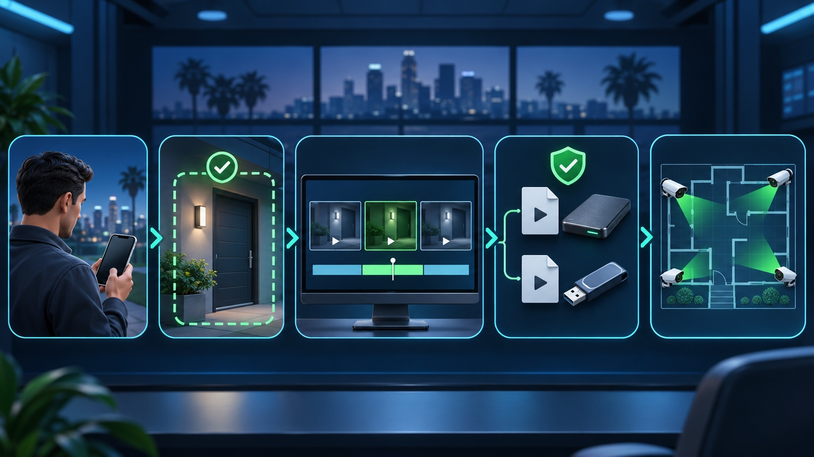

If a break-in may still be in progress, move to a safe place and call 911. Do not enter to check the property yourself. Once the immediate danger has passed, protect the scene and preserve the video before routine recording overwrites it.
The safest sequence is: report the incident, leave the entry and exit path undisturbed, identify the full video window, export an original-quality copy, make a separate working copy, and document what you saved. Do not reset, reformat, replace, or repair the recorder until the relevant footage is secured.
The Los Angeles Police Department directs people to call 911 for an emergency or crime in progress and provides a non-emergency response line for other incidents. LAPD's burglary guidance also says an undisturbed scene can improve the chance of preserving useful evidence.
Most recorders reuse storage when their retention window is full. The correct action depends on the system: an NVR or DVR may have an export tool, a camera may record to a memory card, and a cloud system may use an incident-download workflow. Start the export promptly, but avoid pulling power or changing recorder settings unless the system's documented procedure requires it.
If you cannot find the event, do not initialize a disk, factory-reset the recorder, update firmware, or change its clock as a troubleshooting shortcut. Those actions can make the footage harder to locate or can erase it. A recorder repair visit should begin with preservation, not replacement.
Before choosing the export range, compare the timestamp shown by the recorder with the current time on a reliable phone or computer. Note any difference, the displayed time zone, and whether daylight-saving time appears correct. Do not correct the clock until after the export; instead, write down the offset so investigators can interpret the timeline.
Search a wider window than the moment of entry. Include activity before the incident, the event itself, and what happened afterward. Review every camera that may show an approach, face, vehicle, entry point, direction of travel, or handoff between views.
Use the recorder or camera manufacturer's export function whenever possible. Select the native or original-quality option and include the system's player, digital-signature data, or verification files when offered. Axis documents that an export can combine several cameras and time ranges, include a player, and add a digital signature that helps reveal later alteration. Other brands use different names, so follow the instructions for the exact recorder.
Store the first verified export in a restricted location and avoid editing, renaming, trimming, or re-encoding it. Make a second copy for ordinary review or sharing. The U.S. Department of Justice's digital-evidence guidance emphasizes preserving the best copy and doing analysis on copies rather than the original.
Record the export date, recorder name, camera names, displayed time range, observed clock offset, filenames, storage location, and the name of the person who performed the export. If the system creates an incident report, signature, or checksum, keep it with the files. Ask the assigned investigator how they want the footage delivered; public social-media posting can expose bystanders or details the investigator would prefer to handle directly.
Once police have released the scene and the footage is preserved, review what the recording could and could not show. A useful upgrade may involve a better angle, a narrower detail view, protected cabling, corrected night lighting, longer retention, or a more reliable recorder—not automatically more cameras. Our guides to camera placement, night-image troubleshooting, and retention planning explain those decisions.
If your system did not record, cannot export, or is close to overwriting the event, stop making changes and request help. Tech Secure 360 provides DVR and NVR repair, camera upgrades, and evidence-preserving troubleshooting across Greater Los Angeles.
Tell us about your place and we'll respond within one business day with a tailored plan and pricing. Or call us right now.
Your request is in. A Tech Secure 360 specialist will reach out within one business day. Need help now? Call (747) 336-2737.